Paper Summary: Llama2
Llama2
Llama2 was released by Meta on 2023-07-18. My first exposure to the model was running it locally on my Mac and being blown away by the quality of the results. With most of the prompts I tried for simple questions, Llama2-Chat-13B was better than even ChatGPT. So I was naturally curious about the technical details of the Llama2 paper. In the post I’d like to summarize the technical paper.
Note this write up isn’t the only game in town:
- Nathan Lambert has a nice writeup of his thoughts on the model.
- AI Explained has a nice video breakdown.
- James Briggs also has built a conversational agent that runs locally using Llama 2.
Pretraining (2)
They don’t specify what data they use other than saying it is publicly available and they do not use any proprietary data from Meta’s services. THe model was pre-trained on 2 trillion tokens.
Given the training loss curves below it is clear they could easily keep training this model for better performance.
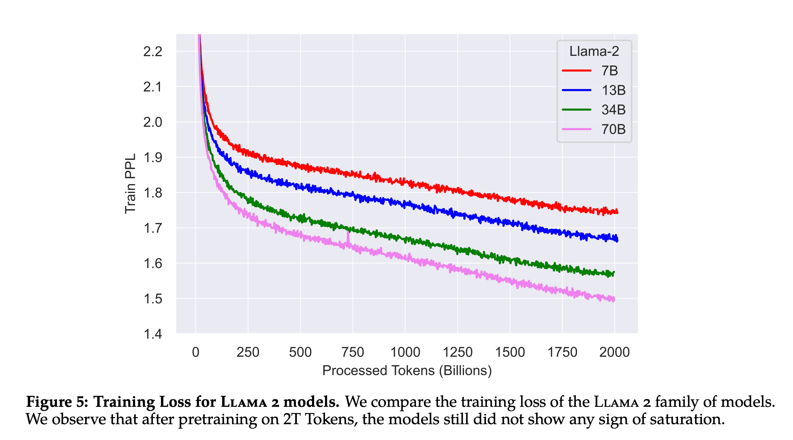
Tokenizer: Same tokenization strategy as Llama 1. I didn’t know Llama 1 used bytepair encoding, all numbers are split into individual characters and bytes are used to decompose unknown UTF-8 characters.
All 4 flavors of Llama 2 was trained using 3.3M GPU hours. Llama 2 70B was trained using 1.72M GPU hours.
Academic Benchmarks
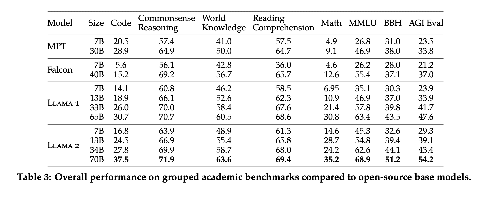
Llama 2 pretty soundly beats similarly sized MPT and Falcon models. I hadn’t heard of AGIEval before. This is the AGIEval repo and paper. I was interested to see how Llama 2 performed against closed source models on AGIEval. The authors say they use 3-5 shot to test AGIEval. Llama 2 70B is getting 54.2 on AGIEval. ChatGPT and GPT-4 were getting 45% and 61.3% respectively as shown in the table below.
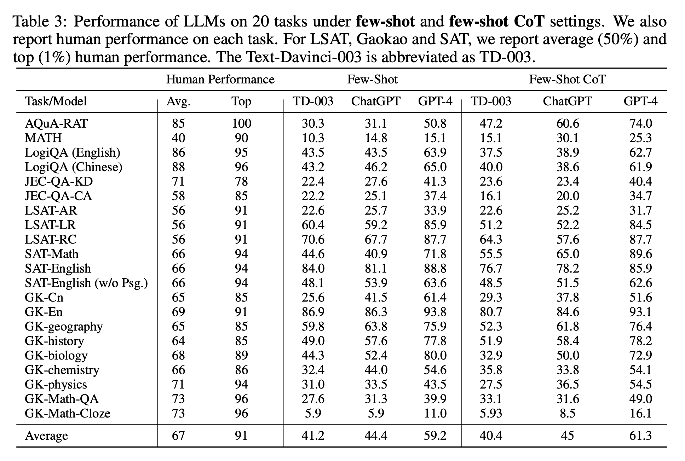
In my tests where I’ve been running llama2-13b-chat locally, I have been very impressed with the results of questions like “What’s the difference between data science and data engineering” or “What’s the purpose of life”? For these two examples, llama2-13b-chat is even providing better answers than Google’s PaLM2 text-bison, ChatGPT, and even GPT-4! I’m not clear why this is the case.
Fine-tuning (3)
Supervised Fine-tuning (3.1)
The authors note the importance of quality over quantity when it comes to datasets for supervised fine-tuning. They only used 27,540 annotations for this step.
Quality Is All You Need. Third-party SFT data is available from many different sources, but we found that many of these have insufficient diversity and quality — in particular for aligning LLMs towards dialogue-style instructions. As a result, we focused first on collecting several thousand examples of high-quality SFT data, as illustrated in Table 5. By setting aside millions of examples from third-party datasets and using fewer but higher-quality examples from our own vendor-based annotation efforts, our results notably improved. These findings are similar in spirit to Zhou et al. (2023), which also finds that a limited set of clean instruction-tuning data can be sufficient to reach a high level of quality. We found that SFT annotations in the order of tens of thousands was enough to achieve a high-quality result. We stopped annotating SFT after collecting a total of 27,540 annotations. Note that we do not include any Meta user data.
Reinforcement Learning with Human Feedback (3.2)
I liked the author’s succint definition of RLHF. Humans are selecting which model outputs they prefer and a reward model is trained that learns these human preferences.
RLHF is a model training procedure that is applied to a fine-tuned language model to further align model behavior with human preferences and instruction following. We collect data that represents empirically sampled human preferences, whereby human annotators select which of two model outputs they prefer. This human feedback is subsequently used to train a reward model, which learns patterns in the preferences of the human annotators and can then automate preference decisions.
Two Reward Models
Interestingly they also try to generate a diversity of model completions by using two different model variants and different temperature hyperparameters.
Our annotation procedure proceeds as follows. We ask annotators to first write a prompt, then choose between two sampled model responses, based on provided criteria. In order to maximize the diversity, the two responses to a given prompt are sampled from two different model variants, and varying the temperature hyper-parameter. In addition to giving participants a forced choice, we also ask annotators to label the degree to which they prefer their chosen response over the alternative: either their choice is significantly better, better, slightly better, or negligibly better/ unsure.
This model is a first for training two separate reward models, one for safety and one for helpfulness. Meta collected over 1.4M binary comparisons to train their safety and helpfulness reward models. The human annotators also had to pick between 5 different options: significantly better, better, slightly better, or negligibly better/ unsure.
The training data for the RLHF models is actually their newly collected preference data along with open source datasets. They do not observe “negative transfer” happening from using open source data so they decided to keep it in to allow for better generalization. The RHLF models are only trained for one epoch to prevent overfitting.
We combine our newly collected data with existing open-source preference datasets to form a larger training dataset. Initially, open-source datasets were used to bootstrap our reward models while we were in the process of collecting preference annotation data. We note that in the context of RLHF in this study, the role of reward signals is to learn human preference for Llama 2-Chat outputs rather than any model outputs. However, in our experiments, we do not observe negative transfer from the open-source preference datasets. Thus, we have decided to keep them in our data mixture, as they could enable better generalization for the reward model and prevent reward hacking, i.e. Llama 2-Chat taking advantage of some weaknesses of our reward, and so artificially inflating the score despite performing less well.
- Helpfulness reward model is eventually trained on all Meta Helpfulness data, combined with an equal parts of the remaining data uniformly sampled from Meta Safety and from the open-source datasets.
- Safety reward model is trained on all Meta Safety and Anthropic Harmless data, mixed with Meta Helpfulness and open-source helpfulness data in a 90/10 proportion. We found that the setting with 10% helpfulness data is especially beneficial for the accuracy on samples where both the chosen and rejected responses were deemed safe.
Rejection Sampling for RL
The authors also describe a method of RHLF that they tried called “Rejection Sampling fine-tuning” that was new to me. It is defined as
We sample K outputs from the model and select the best candidate with our reward, consistent with Bai et al. (2022b). The same re-ranking strategy for LLMs was also proposed in Deng et al. (2019), where the reward is seen as an energy function. Here, we go one step further, and use the selected outputs for a gradient update. For each prompt, the sample obtaining the highest reward score is considered the new gold standard. Similar to Scialom et al. (2020a), we then fine-tune our model on the new set of ranked samples, reinforcing the reward.
The two RL algorithms differ in:
Breadth — in Rejection Sampling, the model explores K samples for a given prompt, while only one generation is done for PPO. Depth — in PPO, during training at step t the sample is a function of the updated model policy from t − 1 after the gradient update of the previous step. In Rejection Sampling fine-tuning, we sample all the outputs given the initial policy of our model to collect a new dataset, before applying the fine-tuning similar to SFT. However, since we applied iterative model updates, the fundamental differences between the two RL algorithms are less pronounced.
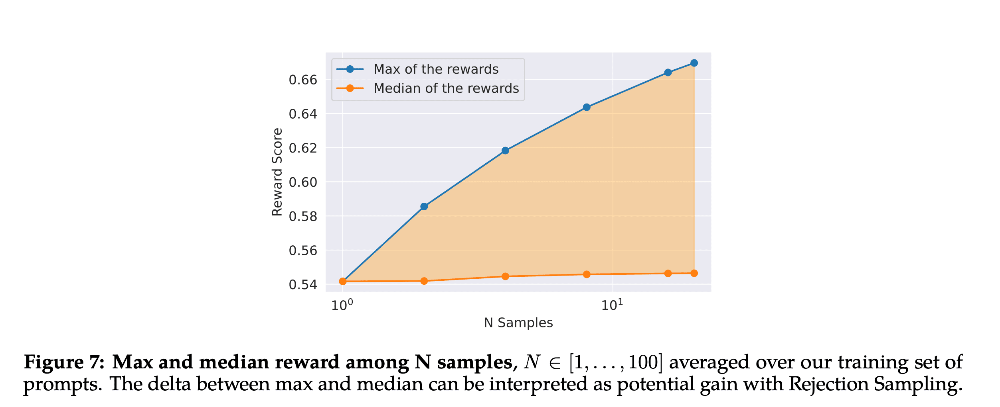
The above plot is interesting in that it highlights the potential gain from using Rejection Sampling. Because more samples are generated, a diversity of completions can be explored and on average these generates a higher maximum reward. Though this plot has a truncated y-axis which makes the difference look larger than it is.
Ghost Attention
When chatting with an LLM, there are sometimes instructions that should apply to all conversation turns, e.g. “Act as [insert public figure here]”.
To address these limitations, we propose Ghost Attention (GAtt), a very simple method inspired by Context Distillation (Bai et al., 2022b) that hacks the fine-tuning data to help the attention focus in a multi-stage process. GAtt enables dialogue control over multiple turns
The method is simple, they created a synthetic dialogue dataset by concatenating the system instruction that should be respected across all conversation turn to all user messages. During training, they only keep the instruction in the first turn and set the loss to zero for all tokens from previous turns. The dataset also contains a few synthetic constraints to sample from like hobbies, language or public figure (and random combinations of the above). This creates an SFT dataset which they use to finetune Llama2 Chat.
The GAtt method leads to the model being able to follow instructions across 20+ turns.
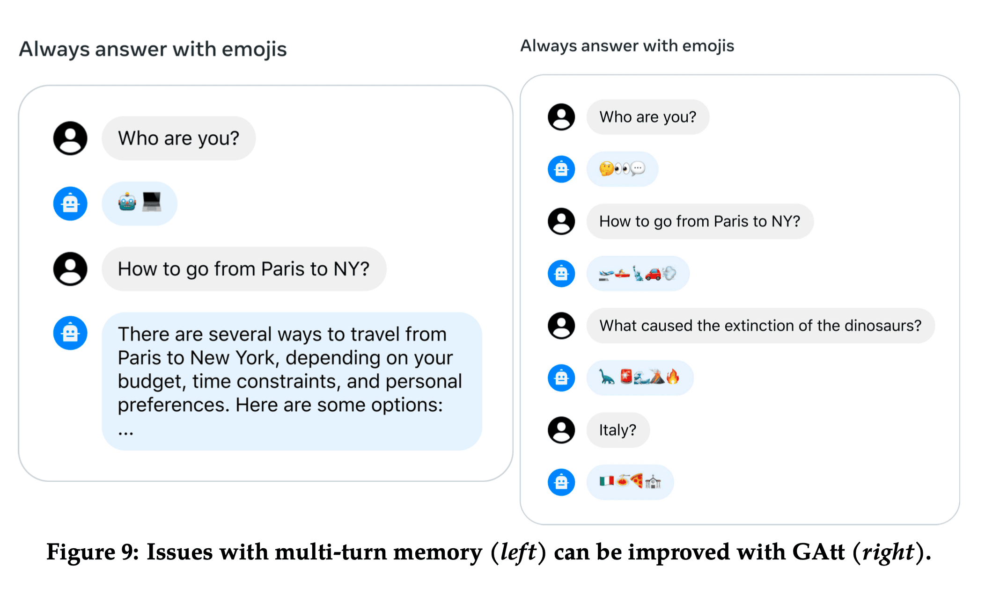
Model Evaluation
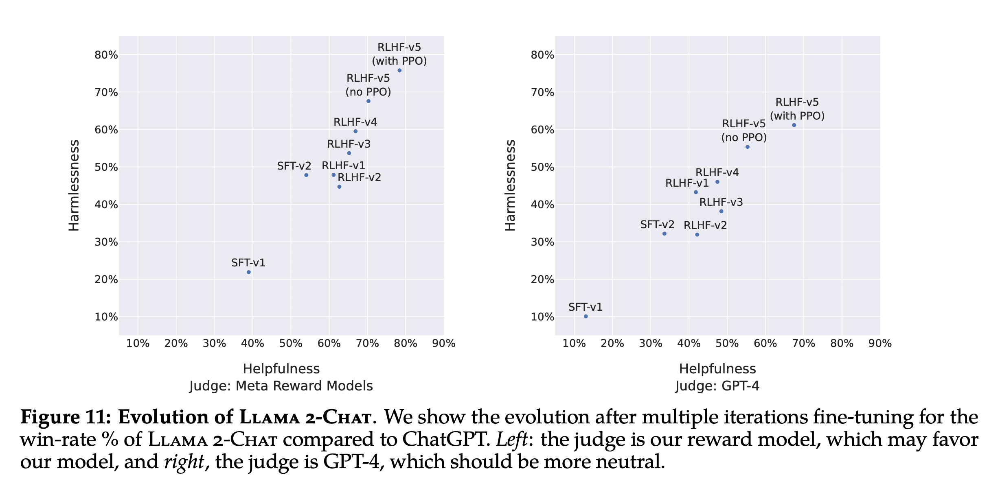
I found the above two plots fascinating as a way to show models evaluating models. Each plot shows the win-rate% of Llama2-Chat versus ChatGPT on both safety (y-axis) and helpfulenss (x-axis) over different iterations of fine-tuning (SFT-v1) and RHLF (RHLF-v1 all the way up to RHLF-v5 with PPO). There were two judges, the Meta’s reward model used to train Llama2-Chat and GPT-4.
Human Evaluation
To evaluate the quality of major model versions, we asked human evaluators to rate them on helpfulness and safety. We compare the Llama 2-Chat models to open-source models (Falcon, MPT MosaicML NLP Team et al. (2023), Vicuna Chiang et al. (2023), as well as closed-source models (Chat- GPT (OpenAI, 2023) and PaLM Anil et al. (2023)) on over 4,000 single and multi-turn prompts. For ChatGPT, we use gpt-3.5-turbo-0301 model in all generations. For PaLM, we use the chat-bison-001 model in all generations.
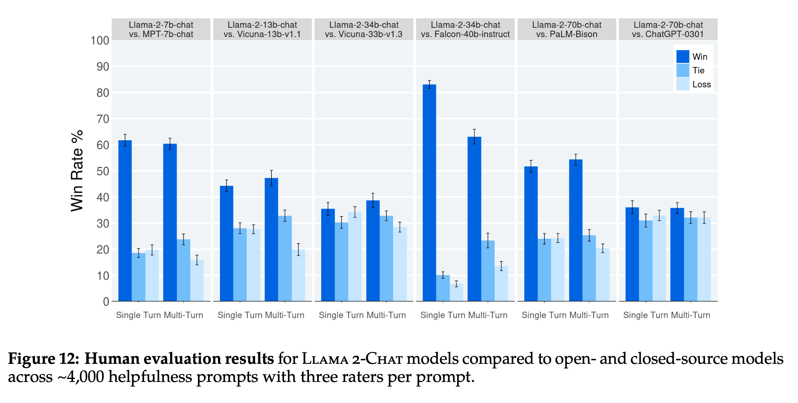
Llama2-Chat is beating similarly sized open source models like MPT, Vicuna, and Falcon. Surprisingly it is also competitive with ChatGPT (Win rate of 36%, tie rate of 31.5%)
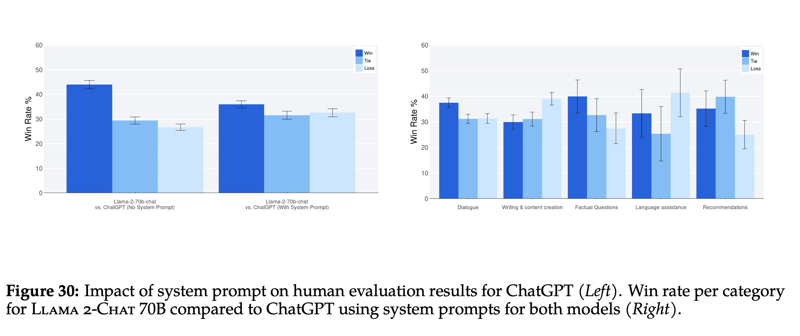
Llama2-Chat wins overall against ChatGPT on these 4,000 prompts. The authors broke down these 4,000 prompts into 4 categories:
- Dialogue
- Writing and content creation
- Factual Questions
- Language assistance
- Recommendations
Llama2-Chat is losing against ChatGPT when it comes to Writing and content creation and Language Assistance but wins in the other 3 categories.
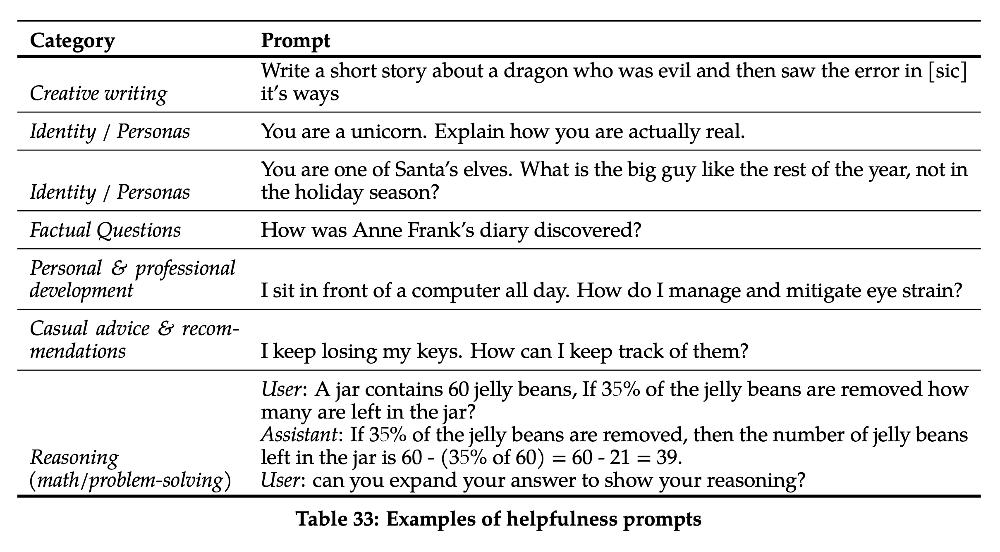
The above shows some examples of prompts that made it into the 4,000 human evaluation dataset. It’s not clear for the category of Language Assistance, whether this refers to programming language or foreign language.
Inter-Rater Reliability
I also learned about a metric called “Inter-Rater Reliability” (IRR) which measures how consistent raters are.
In our human evaluations, three different annotators provided independent assessments for each model generation comparison. High IRR scores (closer to 1.0) are typically seen as better from a data quality perspective, however, context is important. Highly subjective tasks like evaluating the overall helpfulness of LLM generations will usually have lower IRR scores than more objective labelling tasks. There are relatively few public benchmarks for these contexts, so we feel sharing our analysis here will benefit the research community. We used Gwet’s AC1/2 statistic (Gwet, 2008, 2014) to measure inter-rater reliability (IRR), as we found it to be the most stable metric across different measurement scenarios. On the 7-point Likert scale helpfulness task that is used in our analysis, Gwet’s AC2 score varies between 0.37 and 0.55 depending on the specific model comparison. We see scores on the lower end of that range for ratings from model comparisons with similar win rates to each other (like the Llama 2-Chat-70B-chat vs. ChatGPT comparison). We see scores on the higher end of that range for ratings from model comparisons with a more clear winner (like the Llama 2-Chat-34b-chat vs. Falcon-40b-instruct).
Limitations
They call out 4 limitations of their evaluation work:
By academic and research standards, we have a large prompt set of 4k prompts. However, it does not cover real-world usage of these models, which will likely cover a significantly larger number of use cases. Diversity of the prompts could be another factor in our results. For example, our prompt set does not include any coding- or reasoning-related prompts. We only evaluate the final generation of a multi-turn conversation. A more interesting evaluation could be to ask the models to complete a task and rate the overall experience with the model over multiple turns. Human evaluation for generative models is inherently subjective and noisy. As a result, evaluation on a different set of prompts or with different instructions could result in different results.
Key Observations and Insights (5)
RHLF > SFT
The authors make a fascinating conclusion of the superiority of RHLF to supervised-finetuning because of the limitations of human authors to generate diverse and high-quality text.
Even with proficient annotators, each individual writes with significant variation. A model fine-tuned on SFT annotation learns this diversity, including, unfortunately, the tail-end of poorly executed annotation. Fur- thermore, the model’s performance is capped by the writing abilities of the most skilled annotators. Human annotators are arguably less subject to discrepancy when comparing two outputs’ preference annotation for RLHF. Consequently, the reward mechanism swiftly learns to assign low scores to undesirable tail-end distribution and aligns towards the human preference. This phenomena is illustrated in Figure 20, where we can see that the worst answers are progressively removed, shifting the distribution to the right.
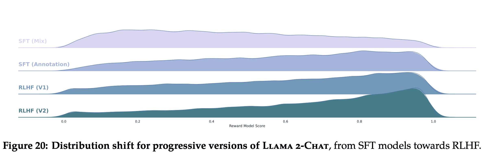
In addition, during annotation, the model has the potential to venture into writing trajectories that even the best annotators may not chart. Nonetheless, humans can still provide valuable feedback when comparing two answers, beyond their own writing competencies. Drawing a parallel, while we may not all be accomplished artists, our ability to appreciate and critique art remains intact. We posit that the superior writing abilities of LLMs, as manifested in surpassing human annotators in certain tasks, are fundamentally driven by RLHF, as documented in Gilardi et al. (2023) and Huang et al. (2023). Supervised data may no longer be the gold standard, and this evolving circumstance compels a re-evaluation of the concept of “supervision.”
We may be entering an era where supervised data (human generated text) for supervised fine-tuning is no longer as useful as model-generated text from the most powerful models like GPT-4. Andrej Karpathy made a similar argument in his talk (State of GPT at around 17:00) saying that its easier for humans to compare two completions (what one does when creating training data for the reward model) vs. creating a completion from scratch (what one does when creating training data for the SFT model). This idea that model-generated text becoming more useful than human generated text reminds me of Microsoft’s paper Orca (Orca: Progressive Learning from Complex Explanation Traces of GPT-4). Eric Hartford recently released an open source implementation of Orca based on Llama1, excited to see what he can do with Llama2.
In-Context Temperature Rescaling
The authors report that temperature affects different types of prompts different (e.g. creative vs factual). For creative prompts, the RHLF models continue to generate diverse completions. However for factual prompts, the RHLF models learn to generate similar completions.
For instance, when it comes to prompts associated with creativity, such as “Write a poem,” an increase in temperature continues to generate diversity across our various RLHF iterations. This can be observed in the Self-BLEU slope, which mirrors a pattern comparable to that of the SFT model. On the other hand, for prompts based on factual information, such as “What is the capital of ?” the Self-BLEU slope diminishes over time. This pattern suggests that despite the rising temperature, the model learns to consistently provide the same response to factual prompts.
It’s not clear to me why temperature here can be above 1.
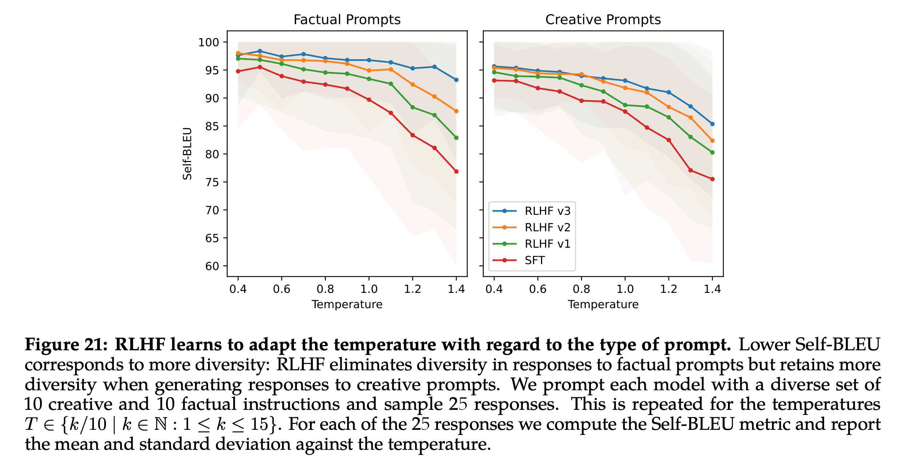
Time Awareness
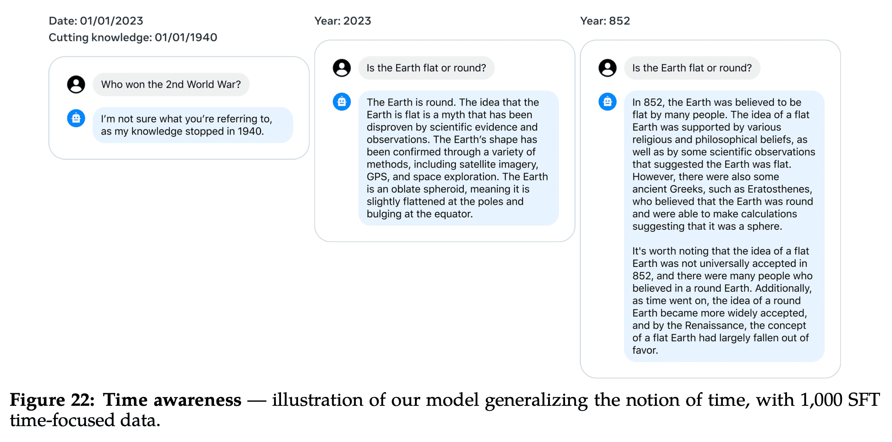
Llama2-Chat also has the ability to organize it’s knowledge in a temporal manner. It sounds like they used 1,000 SFT examples to demonstrate it’s Llama2-Chat’s ability to understand time versus fine-tuning it to understand time.
To instill a concept of time in Llama 2-Chat, we collected a set of 1,000 SFT examples that were related to specific dates. These examples included questions like “How long ago did Barack Obama become president?” Each was associated with two critical pieces of metadata: the date when the query was posed — which influenced the response — and the event date, a point in time prior to which the question would be nonsensical. The observation suggests that LLMs have internalized the concept of time to a greater extent than previously assumed, despite their training being solely based on next-token prediction and data that is randomly shuffled without regard to their chronological context.
Tool Use
Llama2-Chat also demonstrates an ability to use tools like a Calculator or Search even though it was not trained on this data.
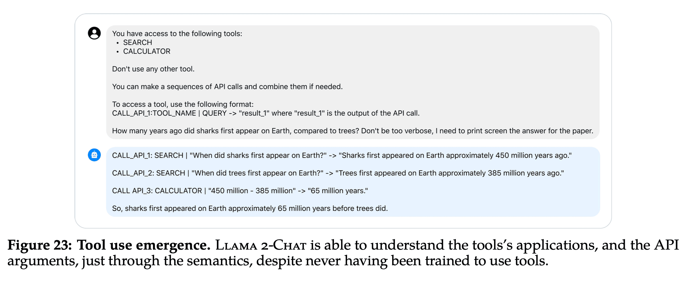
LLama2-Chat because it can use a calculator demonstrates better performance than GPT-3 and Toolformer on a math benchmark.
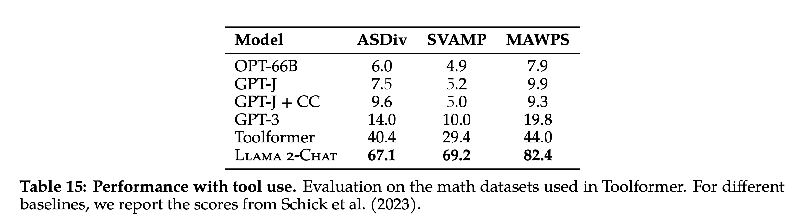
Conclusion
From my limited experiments, I already knew Llama2-Chat was an exciting open source model. This paper is also an incredible artifact for learning and understanding details around RHLF (a novel idea around training two reward models), Ghost Attention (GAtt) and documenting interesting properties of the model like temporal awareness, tool use and the ability to adapt temperature to the type of prompt. I’m excited to see what the open source community builds on top of Llama2-Chat and the Llama2 family of models.